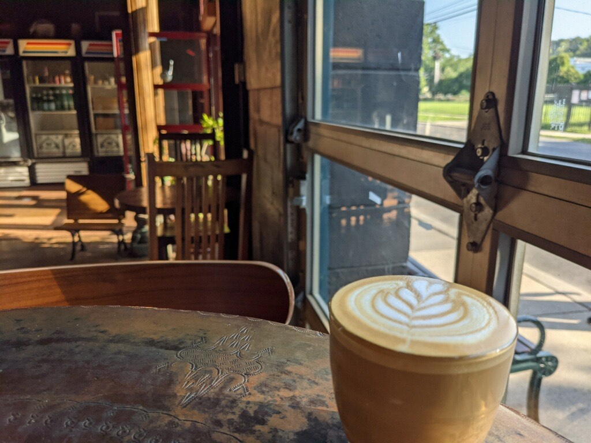
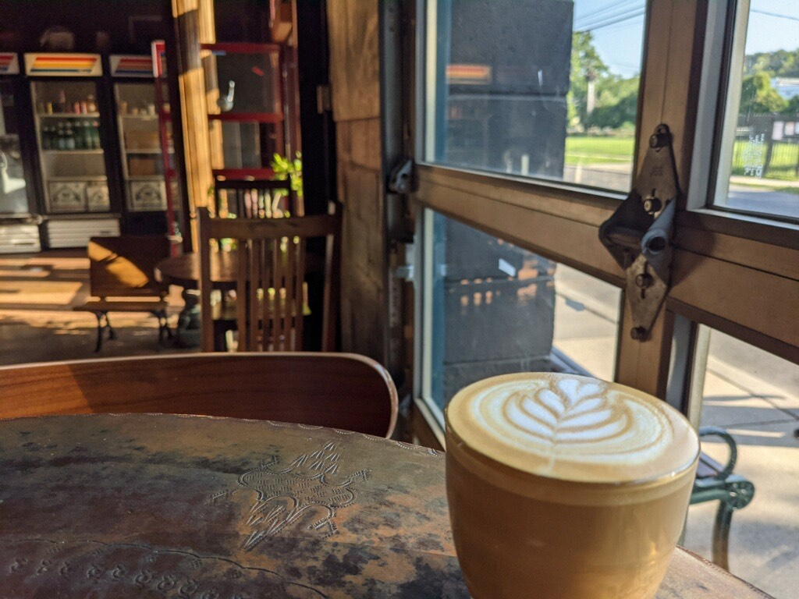

خوشمزه و لذت بخش
. وقتی صحبت از انتخاب غذا میشود، تعداد زیادی غذا وجود دارد که میتوانیم از میان آنها انتخاب کنیم. از پیتزا ایتالیایی گرفته تا کروسانت فرانسوی، کیک پای شفرد تا تا بلوزهای وفل، حتی قورمه سبزی! لیست بی پایانی از غذا وجود دارد که دوست داریم در مورد آنها صحبت کنیم. انتخاب یک غذا به عنوان غذای مورد علاقه واقعاً دشوار است، اما من مطمئن هستم که همه ما غذای مورد علاقه ای داریم که بتوانیم در مورد آن صحبت کنیم.
 
